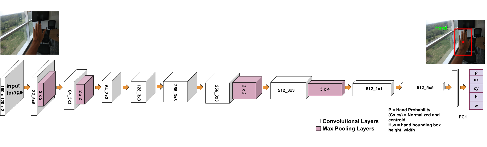

Abstract
Hand gestures are utilised extensively on egocentric vision systems, in robotics, Augmented and Virtual Reality systems, amongst others. Accurate hand detection is typically a first step for the applications mentioned before and can be achieved through the state-of-the-art deep learning models such as YOLOv2, MobileNetv2 and Faster RCNN Often, such models come with overhead of either computational load or failure to achieve real-time performance in a resource constrained environment. To this end, we propose a light weight hand detection module that also achieves state-of-the-art performance in First Person View(FPV) using RGB data only. Our network, termed, EgoHandNet is a hand detection module inspired by Tiny YOLO[] preserving the global context for accurate localisation of hands in FPV. Our contributions to hand detection are: low model size (73MB) can be easily ported on phone with highest precision among the existing models such as TinyYOLO, YOLOv2, FRCNN and also MobileNetV2 99.88% on SCUT dataset. This is mainly because our novel loss function used for training the network and for specific purpose of detecting hand in FPV. Our model is trained on a GPU machine and is ported on to an android device to be used with frugal Augmented Reality headsets in the likes of Google Cardboard and VR Box.
Key Contribution
- We propose EgoHandNet , a light weight convolutional neural network architecture, consisting of a CNN for efficient hand Detection in First person view gestural interaction with HMD.
- EgoHandNet works in real-time and can be ported on mobile devices due to low memory footprint.
- Loss function : A novel loss function is defined to fit the bounding box by penalizing height and box evenly for all size boxes.
The Idea
We present a novel light weight architecture to detect hands in first person view. Figure ?? shows our architecture as a convolutional neural network with 9 Convolutional layers followed by two Fully Connected(FC1, FC2) layers. A dataset used for training is a combination of SCUT, KITTY and MS COCO. The training of the model is de- scribed in subsection 3.1 and evaluated it on the combined dataset (SCUT+KITTY+COCO). The initial convolutional layers of the network extract features from the image while the fully connected layer predicts the hand’s confidence score, with normalised hand centroid and normalized bounding box dimensions(height and width). Our network architecture is inspired by the YOLO and Tiny YOLO models for hand classification and detection. Our network has 9 convolutional layers, 4 pooling layer(after first, second ,sixth and seventh covolutional layer) followed by two fully connected layer. Batch normalization leads to significant improvements in convergence while eliminating the need for other forms of regularization. So batch normalization is used after each convolution layer. Input image is 160 * 120. Size of input layer is kept small because we want to detect hand in FPV as if hand is present it will be most prominent object and it will also reduce computational complexity hence model size could be small. we use leaky ReLu activation function in the convolution layer, no activation in FC1 and sigmoid activationfunction in FC2 layer. So that we can get normalized out- put ranges from 0 to 1. The final output of our network is a 1D vector of length 5.

Figure above shows the overview of our proposed fingertip regressor architecture for fingertip localization. The input to the network is 3x256x256 sized RGB images. The network consists of 6 convolutional blocks, each with different convolutional layers followed by a max-pooling layer. Then we have a convolutional layer to output a heatmap which is input to DSNT. Finally, we get 2 coordinates denoting fingertip spatial location.
Dataset
To train the net dataset is comprised of SCUT datasets, The KITTI Vision daatset and coco datasets. SCUT datasets is used for positive hand case, The KITTI Vision daatset and coco is used for negative hand case. All imges were resized to 160 X 120 sizes images. we have to detect only one object( Hand) which will be of sufficient size if present because image is capture in ego vision. which helps in reducing model size. Randomly 55551 images is selected from SCUT datasets and 39033 form coco and The KITTI Vision dataset . So totally 94584 images is used. out of these total image, ramdomly 55000 is selected for training, 15000 for validation and 24584 for Testing